عزل الأسطح والخزانات بالرياض مع براقيو
تُعد أعمال العزل المائي والحراري للأسطح والخزانات من أهم أعمال الحماية التي تحتاج إليها المنازل والفلل والعمائر والمنشآت التجارية في مدينة الرياض. فمع ارتفاع درجات الحرارة في الصيف، وتساقط الأمطار في الشتاء، تتعرض الأسطح والخزانات لعوامل جوية قاسية قد تؤدي إلى تسرب المياه، وتآكل الخرسانة، وارتفاع حرارة المبنى، وزيادة استهلاك الكهرباء.
تقدم براقيو خدمات عزل الأسطح والخزانات بالرياض باستخدام أحدث مواد العزل العالمية (ألمانية، أمريكية، إيطالية) المعتمدة من هيئة المواصفات والمقاييس السعودية. نغطي جميع أحياء مدينة الرياض مع فريق فني متخصص يمتلك خبرة تتجاوز 15 عامًا.
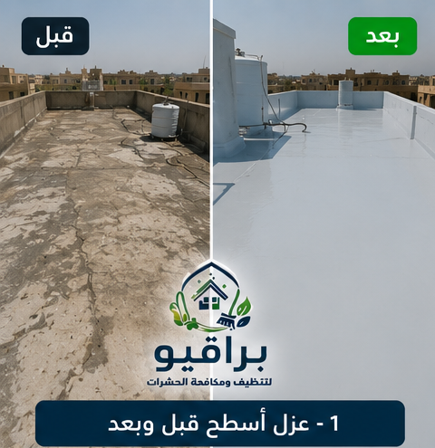
قبل وبعد العزل

قبل وبعد العزل
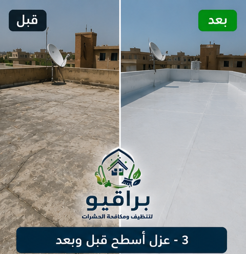
قبل وبعد العزل
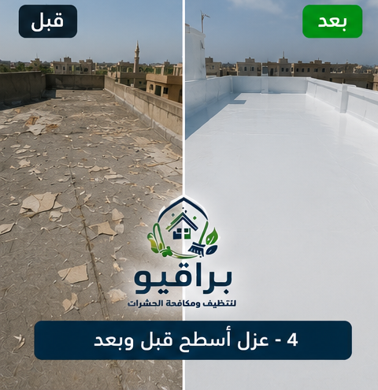
قبل وبعد العزل
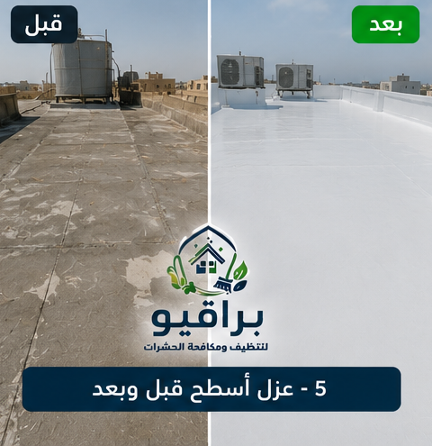
قبل وبعد العزل
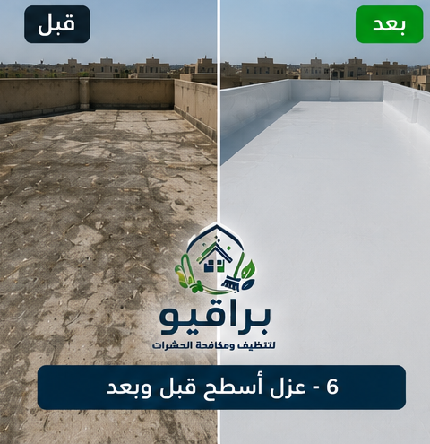
قبل وبعد العزل
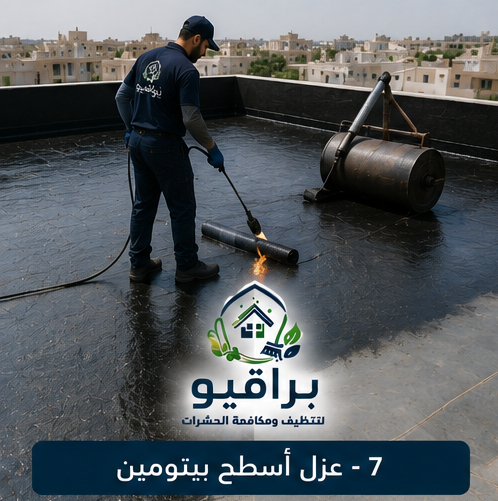
العزل بالبيتومين
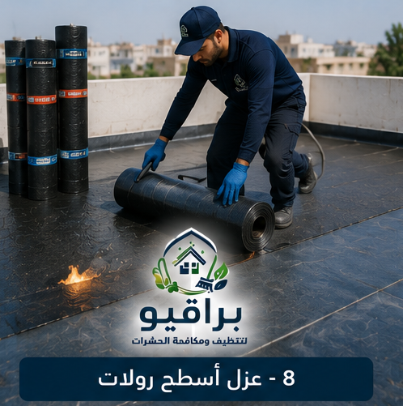
العزل بالرولات
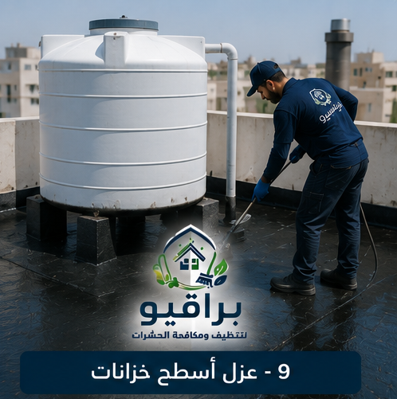
عزل الخزانات
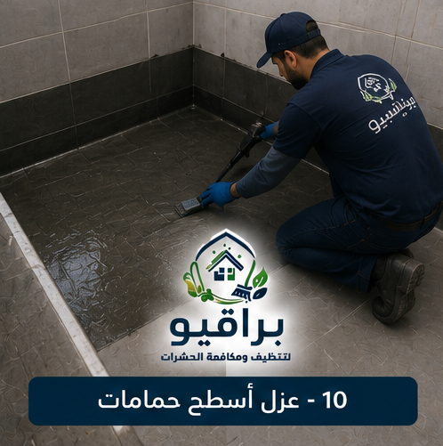
عزل الحمامات
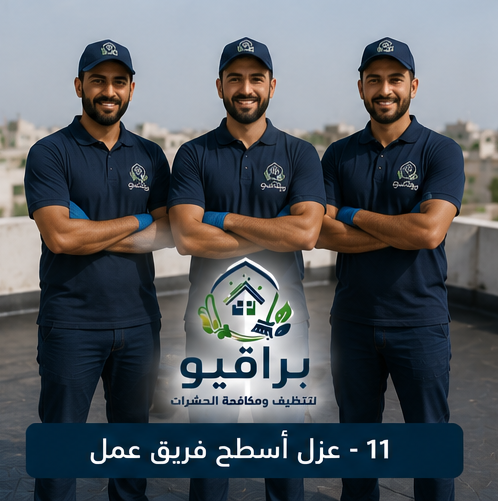
فريق العمل
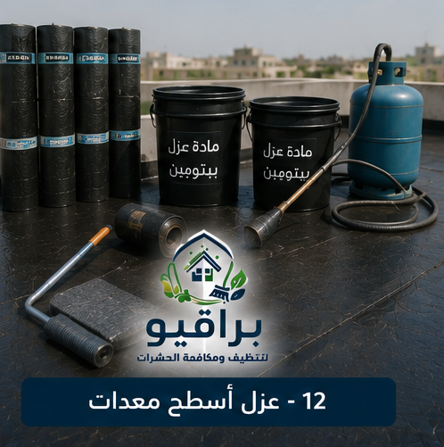
المعدات
ما هو العزل المائي؟
العزل المائي هو عملية حماية الأسطح والجدران والخزانات من تسرب المياه والرطوبة، باستخدام مواد عازلة تمنع نفاذ المياه إلى داخل المبنى. ويُعد العزل المائي من أهم خطوات البناء والتشطيب، ويمثل خط الدفاع الأول ضد أضرار تسرب المياه.
ما هو العزل الحراري؟
العزل الحراري هو عملية حماية المبنى من اكتساب الحرارة الخارجية في الصيف، أو فقدان الحرارة الداخلية في الشتاء، باستخدام مواد عازلة للحرارة. ويساعد العزل الحراري في تقليل استهلاك أجهزة التكييف، وخفض فاتورة الكهرباء، وتوفير بيئة داخلية مريحة طوال العام.
أهمية العزل المائي والحراري في مدينة الرياض
تتميز مدينة الرياض بمناخ صحراوي قاسٍ، حيث ترتفع درجات الحرارة في الصيف إلى أكثر من 45 درجة مئوية، وتشهد بعض الأشهر أمطارًا غزيرة. ولهذا فإن العزل المائي والحراري ضرورة لحماية المبنى من: تسرب مياه الأمطار، تآكل حديد التسليح، تشقق الجدران والأسقف، ظهور العفن والرطوبة، ارتفاع درجة حرارة الغرف، زيادة استهلاك الكهرباء، تلف الدهانات، انخفاض العمر الافتراضي للمبنى.
أنواع خدمات العزل التي تقدمها براقيو
- عزل الأسطح (مائي وحراري).
- عزل الخزانات (علوية وأرضية).
- عزل الحمامات والمطابخ.
- عزل المسابح والنوافير.
- عزل الأساسات والقواعد.
- عزل الجدران الخارجية.
- عزل المواسير والتمديدات.
🏠 سطح منزلك يحتاج عزل؟
📱 احجز موعد الآنمواد العزل المستخدمة في براقيو
أولاً: مواد العزل المائي
1. أغشية البيتومين (اللفائف البيتومينية): أغشية سميكة يتم لصقها باستخدام اللهب المباشر، تتميز بمتانتها العالية. ماركات: سيكا، بيتومكس، جي إم.
2. الدهانات الإسمنتية العازلة: مواد إسمنتية مرنة تُدهن على الأسطح وتشكل طبقة عازلة للماء.
3. الإيبوكسي: مادة عازلة قوية تستخدم لعزل الخزانات والمسابح.
4. البولي يوريثان السائل: مادة سائلة تُرش على السطح وتتحول إلى غشاء عازل مرن ومتين.
5. الأسمنت الكريستالي: مادة تخترق مسام الخرسانة وتشكل بلورات تسد الشقوق الدقيقة.
ثانيًا: مواد العزل الحراري
1. البوليسترين: ألواح صلبة خفيفة الوزن ذات كفاءة عالية في العزل الحراري.
2. البولي يوريثان الرغوي: مادة تُرش على السطح وتتحول إلى رغوة صلبة عازلة للحرارة والماء.
3. الصوف الصخري: مادة عازلة للحرارة والصوت، مقاومة للحريق.
4. البرلايت: حبيبات خفيفة تُخلط مع الأسمنت لتشكل طبقة عازلة للحرارة.
أنظمة العزل المتبعة في براقيو
النظام التقليدي (العزل الإسمنتي + البيتومين): طبقة ميول إسمنتية، طبقة برايمر، طبقة بيتومين، طبقة حماية إسمنتية.
النظام المتكامل (عزل مائي + حراري): طبقة ميول، برايمر، عزل مائي، عزل حراري، طبقة حماية، تشطيب.
نظام العزل بالبولي يوريثان: تنظيف السطح، برايمر، رش البولي يوريثان الرغوي (مائي وحراري معًا)، طبقة حماية.
💧 خزانك يحتاج عزل؟
📱 تواصل معنا واتسابعزل الأسطح بالرياض
تشمل خدمتنا: تنظيف السطح، إصلاح الشقوق، عمل طبقة ميول، تطبيق البرايمر، تركيب العزل المائي، تركيب العزل الحراري، صب طبقة حماية، تركيب التشطيب، ضمان يصل إلى 10 سنوات.
عزل الخزانات بالرياض

تشمل خدمتنا: تفريغ الخزان وتنظيفه، إصلاح الشقوق، معالجة حديد التسليح المتآكل، تطبيق طبقة عازلة إسمنتية، تطبيق طبقة إيبوكسي، معالجة الزوايا والفواصل، اختبار الخزان بعد العزل، تعقيم الخزان عند الطلب، ضمان يصل إلى 10 سنوات.
عزل الحمامات والمطابخ بالرياض
تشمل خدمتنا: إزالة البلاط القديم، تنظيف الأرضية والجدران، إصلاح الشقوق، تطبيق طبقة عزل مائي، معالجة الزوايا وفتحات الصرف، اختبار العزل، إعادة تركيب البلاط، ضمان.
خطوات عزل الأسطح والخزانات في براقيو
1. المعاينة: زيارة الموقع لفحصه بالكامل.
2. رفع المقاسات: حساب الكميات بدقة.
3. عرض السعر: عرض سعر شامل وشفاف.
4. تجهيز السطح: تنظيف وإصلاح الشقوق.
5. تطبيق العزل: تنفيذ أعمال العزل وفق المواصفات.
6. اختبار العزل: التأكد من سلامته.
7. التشطيب: تركيب طبقة الحماية والتشطيب.
8. التسليم: مع التقرير الفني والضمان.
خدمات العزل في جميع أحياء الرياض
تغطي خدمات براقيو جميع أحياء مدينة الرياض: حي النرجس، حي الياسمين، حي الملقا، حي العارض، حي حطين، حي الصحافة، حي الربيع، حي الغدير، حي العقيق، حي المروج، حي الورود، حي النفل، حي الندى، حي الفلاح، حي التعاون، حي الازدهار، حي قرطبة، حي الرمال، حي المونسية، حي القادسية، حي اليرموك، حي الخليج، حي الروضة، حي اشبيلية، حي الجزيرة، حي النهضة، حي الريان، حي الربوة، حي القدس، حي الروابي، حي السويدي، حي ظهرة لبن، حي لبن، حي طويق، حي العريجاء، حي الشفا، حي بدر، حي العزيزية، حي الدار البيضاء، حي المنصور، حي نمار، حي العليا، حي السليمانية، حي الملز. كما نغطي شمال وجنوب وشرق وغرب ووسط الرياض.
الأسئلة الشائعة
ما أفضل شركة عزل أسطح بالرياض؟
ابحث عن الخبرة الطويلة (مثل براقيو بخبرة 15 عامًا)، واستخدام مواد عازلة معتمدة، وتقديم ضمان طويل المدى.
كم مدة ضمان العزل؟
نقدم ضمان يصل إلى 10 سنوات على أعمال العزل المائي والحراري.
ما الفرق بين العزل المائي والحراري؟
العزل المائي يحمي من تسرب المياه والرطوبة، أما العزل الحراري فيحمي من ارتفاع درجة الحرارة ويقلل استهلاك الكهرباء.
هل عزل الأسطح يقلل من حرارة المنزل؟
نعم، العزل الحراري يقلل من درجة حرارة الغرف بنسبة تصل إلى 40%.
خبرة 15 عامًا
فريق متخصص ومدرب على أعلى مستوى
مواد عالمية
سيكا، بيتومكس، جي إم الألمانية
أنظمة متكاملة
عزل مائي وحراري معًا
ضمان 10 سنوات
أطول ضمان في السوق
نصائح للحفاظ على العزل بعد التنفيذ
- افحص سطح منزلك بشكل دوري (كل 6 أشهر).
- نظف فتحات تصريف المياه على السطح.
- لا تترك مياه راكدة على السطح.
- أصلح أي شق أو تلف في طبقة الحماية فورًا.
- لا تثبت أطباق الستالايت بشكل عشوائي على السطح المعزول.
- استخدم قواعد مطاطية أسفل الأجهزة المثبتة على السطح.
- اطلب فحصًا دوريًا من شركة متخصصة كل سنتين.
خاتمة
عزل الأسطح والخزانات بالرياض ليس رفاهية، بل هو استثمار ضروري لحماية منزلك أو منشأتك من أضرار تسرب المياه وارتفاع درجات الحرارة. في براقيو، نقدم خدمات عزل متكاملة تجمع بين الخبرة التي تتجاوز 15 عامًا، وأفضل مواد العزل العالمية، وأنظمة العزل المزدوجة، مع ضمان يصل إلى 10 سنوات. اتصل بنا الآن للحصول على معاينة مجانية واستشارة فورية.
نقدم خدمة تنظيف المكيفات في جميع أحياء الرياض: حي النرجس، حي الياسمين، حي الملقا، حي العارض، حي حطين، حي الصحافة، حي الربيع، حي الغدير، حي العقيق، حي المروج، حي الورود، حي النفل، حي الندى، حي الفلاح، حي التعاون، حي الازدهار، حي قرطبة، حي الرمال، حي المونسية، حي القادسية، حي اليرموك، حي الخليج، حي الروضة، حي إشبيلية، حي الجزيرة، حي النهضة، حي الحمراء، حي غرناطة، حي الريان، حي الربوة، حي القدس، حي الروابي، حي السويدي، حي ظهرة لبن، حي لبن، حي طويق، حي العريجاء، حي البديعة، حي شبرا، حي سلطانة، حي الشفا، حي بدر، حي العزيزية، حي الدار البيضاء، حي المنصور، حي الحزم، حي نمار، حي أحد، حي عكاظ، حي المروة، حي العليا، حي السليمانية، حي الملز، حي الفوطة، حي المربع، حي البطحاء، حي الديرة، حي السفارات.